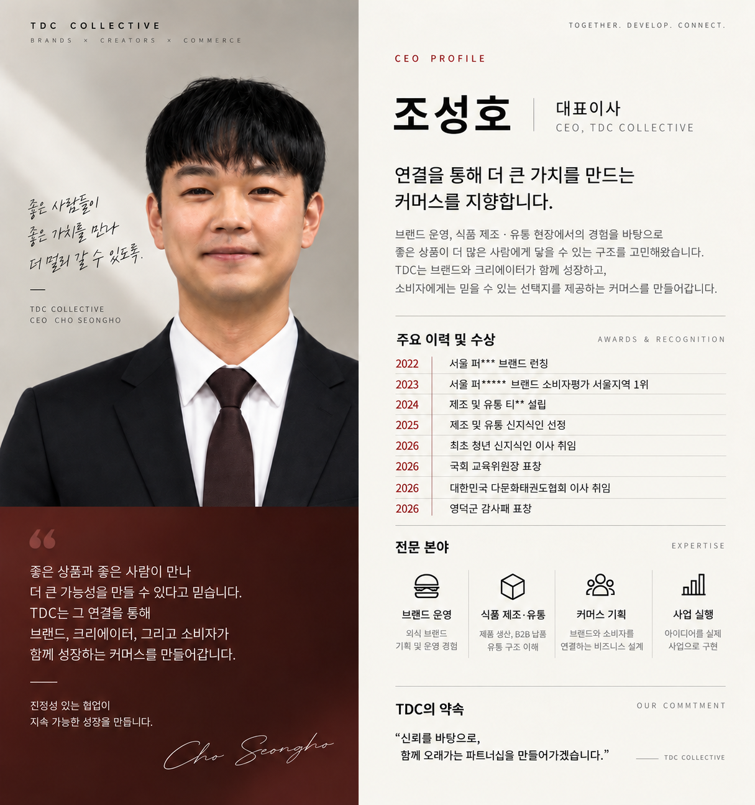

함께 시작합니다.
브랜드와 크리에이터 어느 한쪽도 소모되지 않는 조건을 만듭니다.
Together. Develop. Connect. TDC COLLECTIVE는 브랜드, 크리에이터, 고객 사이의 연결을 실제 판매와 반복 가능한 성장으로 바꿉니다.
브랜드 운영과 식품 제조·유통 현장에서 얻은 경험을 바탕으로, 좋은 상품과 좋은 사람이 함께 성장할 수 있는 커머스를 만들어갑니다.

좋은 상품이 알려지는 것만으로는 부족합니다. 누구에게, 어떤 메시지로, 어떤 조건에서 제안했을 때 구매가 일어나는지 확인해야 다음 성장을 설계할 수 있습니다.
브랜드와 크리에이터 어느 한쪽도 소모되지 않는 조건을 만듭니다.
실제 고객 반응과 판매 데이터를 다음 실행에 반영합니다.
팔로워 수보다 상품, 콘텐츠, 고객의 적합성을 우선합니다.
연결에서 멈추지 않고 판매 페이지, 주문, CS, 정산까지 봅니다.